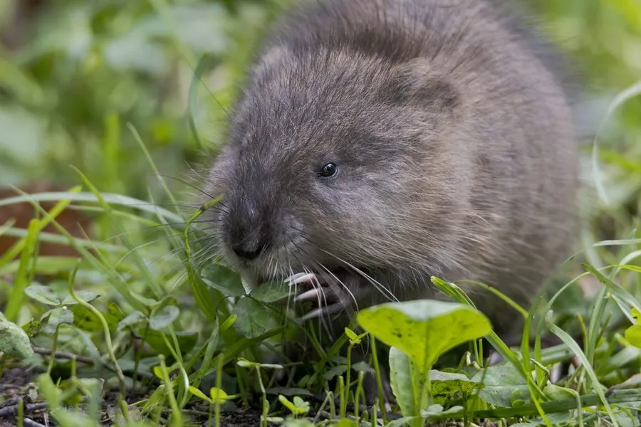

哺乳动物 · 动物界
麝鼠 Ondatra zibethicus

半水生的北美啮齿动物，体形似大老鼠而尾侧扁如桨，会筑草巢与挖岸洞，分泌物有麝香气味，被引入欧亚后广泛扩散。
- 分类
- 门脊索动物门纲哺乳纲目啮齿目科仓鼠科属麝鼠属
- 栖息环境
- 沼泽、池塘、缓流河道、沟渠与河岸水草带
- 地理分布
- 原产北美洲；被引入欧洲、俄罗斯及中国东北、华北等地
- 保护级别
- IUCN 无危（LC）；在中国为外来归化种
物种志
麝鼠体形粗壮，成年体长 25–40 厘米，尾长 20–25 厘米，体重 0.6–1.8 千克。毛被厚密防水，背毛棕褐至深褐色，腹面灰褐，尾侧扁、几乎无毛、覆盖鳞片，游泳时像一支桨；后足有半蹼，耳小，眼小。雄鼠腹侧有麝香腺，分泌物带有浓烈麝香气味，因此得名“麝鼠”，也被称作北美麝鼠或水耗子。
麝鼠原产北美洲，栖息于沼泽、池塘、缓流河道与河岸水草带，善游泳和潜水，可在水下停留十余分钟。它在水中取食香蒲、芦苇的根茎与嫩芽，也吃贝类、小鱼和蛙。冬季结冰前会用植物茎叶堆筑圆锥形草巢，或在岸边挖洞居住，巢体高出冰面以便呼吸。每年繁殖 2–3 胎，孕期约 30 天，每胎 4–8 仔。20 世纪初被引入欧洲和中国，因毛皮价值而扩散，对堤坝与本地植被造成一定影响。
形态与习性
- 体长约 25–40 cm，尾长 20–25 cm
- 体重约 0.6–1.8 kg
- 食性香蒲、芦苇等水生植物根茎，兼食贝类、小鱼与蛙
- 潜水可在水下停留约 10–15 分钟
- 繁殖每年 2–3 胎，孕期约 30 天，每胎 4–8 仔
- 巢穴用植物茎叶堆筑圆锥形草巢，或挖掘岸洞
- 寿命野外约 3 年，饲养下可达 10 年
趣味知识
- 麝鼠的尾巴侧扁无毛，游起来像一支左右划动的船桨。
- 它筑的草巢在结冰期会高出冰面，留出呼吸和进出的通道。
- 雄鼠的麝香腺分泌物气味浓烈，曾被视为香料的廉价替代品。